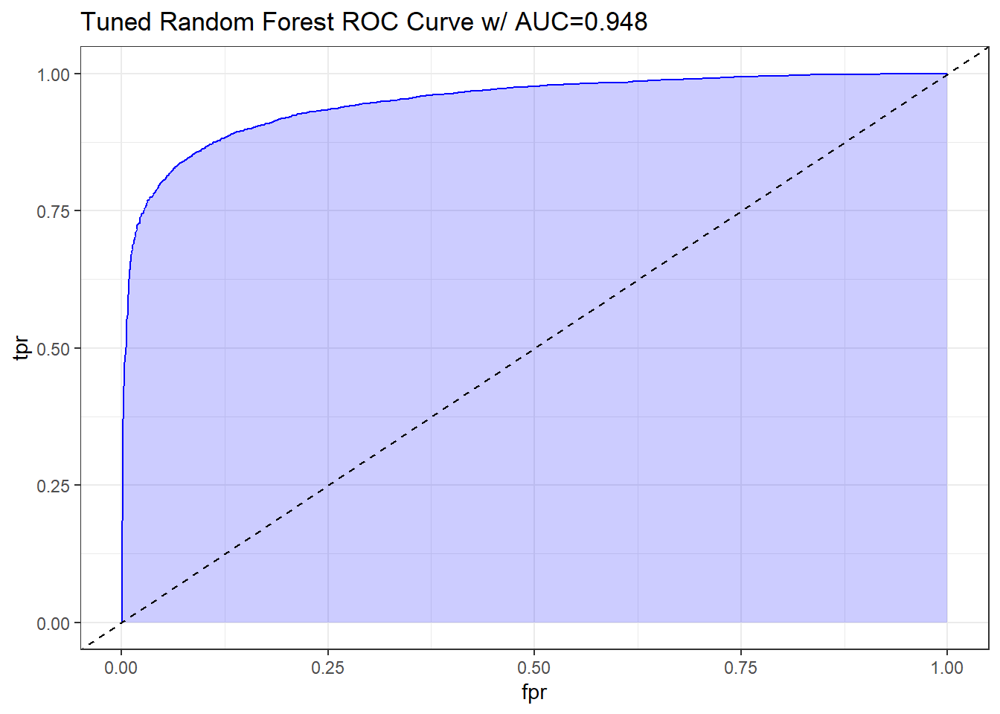

3 Logistic Regression (LR)
3.1 Introduction
Below paragraph is copied from the assignment, we are planning on updating this as we formulate our narrative for the final deliverable:
Logistic Regression (LR) is a popular algorithm for binary classification tasks, modeling the relationship between features and the probability of an event occurrence.
LR’s simplicity makes it an excellent choice for initial modeling. Yet, it may struggle with complex relationships between features, limiting its performance on intricate datasets relative to other algorithms, such as RF or ANN, which will be covered in a later module.
Our initial model will utilize LR. With LR, we can efficiently calculate the probability of a ‘yes’ or ‘no’ response based on all features in the dataset.
3.2 Load Data
# Load data
train_lr <- read.csv('Train Test Set/train_lr.csv')
test_lr <- read.csv('Train Test Set/test_lr.csv')
# Display statistics
str(train_lr)## 'data.frame': 10379 obs. of 27 variables:
## $ gender_female : int 1 1 1 0 1 1 1 0 1 1 ...
## $ gender_male : int 0 0 0 1 0 0 0 1 0 0 ...
## $ age : int 24 34 19 19 25 26 23 27 26 20 ...
## $ fam_history_overweight1 : int 1 1 1 1 1 1 1 1 1 0 ...
## $ freq_consumption_hc_food1 : int 1 1 1 1 1 1 0 1 1 0 ...
## $ veg_freq : num 3 2.1 3 3 3 ...
## $ num_meals : num 3 2.98 3 3 3 ...
## $ food_between_meals_frequently : int 0 0 0 0 0 0 0 0 0 1 ...
## $ food_between_meals_never : int 0 0 0 0 0 0 0 0 0 0 ...
## $ food_between_meals_sometimes : int 1 1 1 0 1 1 1 1 1 0 ...
## $ smoke1 : int 0 0 0 0 0 0 0 0 0 0 ...
## $ water_daily : num 2.47 1.96 2.87 3 2.86 ...
## $ caloric_beverages1 : int 0 0 0 1 0 0 0 0 0 0 ...
## $ activity_freq : num 0.167 0.988 1.465 3 0.265 ...
## $ tech_use : num 0.487 0 0.656 0 0.673 ...
## $ alcohol_never : int 0 0 0 0 0 0 0 0 0 0 ...
## $ alcohol_sometimes : int 1 1 1 1 1 1 1 1 1 1 ...
## $ transport_bike : int 0 0 0 0 0 0 0 0 0 0 ...
## $ transport_motorbike : int 0 0 0 0 0 0 0 0 0 0 ...
## $ transport_public_transportation: int 1 0 1 1 1 1 1 1 1 1 ...
## $ transport_walking : int 0 0 0 0 0 0 0 0 0 0 ...
## $ obesity_leveloverweight : int 1 1 1 1 1 1 1 1 1 0 ...
## $ eating_habit_binary : num 2.67 2.36 2.67 2.67 2.67 ...
## $ physical_activity_binary : num -0.32 0.988 0.809 3 -0.408 ...
## $ age_group_young_adult : int 1 1 1 1 1 1 1 1 1 1 ...
## $ age_group_adult : int 0 0 0 0 0 0 0 0 0 0 ...
## $ age_group_senior : int 0 0 0 0 0 0 0 0 0 0 ...## gender_female gender_male age fam_history_overweight1
## Min. :0.0000 Min. :0.0000 Min. :14.00 Min. :0.0000
## 1st Qu.:0.0000 1st Qu.:0.0000 1st Qu.:20.00 1st Qu.:1.0000
## Median :1.0000 Median :0.0000 Median :23.00 Median :1.0000
## Mean :0.5079 Mean :0.4921 Mean :23.81 Mean :0.8177
## 3rd Qu.:1.0000 3rd Qu.:1.0000 3rd Qu.:26.00 3rd Qu.:1.0000
## Max. :1.0000 Max. :1.0000 Max. :61.00 Max. :1.0000
## freq_consumption_hc_food1 veg_freq num_meals
## Min. :0.0000 Min. :1.000 Min. :1.000
## 1st Qu.:1.0000 1st Qu.:2.000 1st Qu.:3.000
## Median :1.0000 Median :2.445 Median :3.000
## Mean :0.9166 Mean :2.452 Mean :2.758
## 3rd Qu.:1.0000 3rd Qu.:3.000 3rd Qu.:3.000
## Max. :1.0000 Max. :3.000 Max. :4.000
## food_between_meals_frequently food_between_meals_never
## Min. :0.0000 Min. :0.00000
## 1st Qu.:0.0000 1st Qu.:0.00000
## Median :0.0000 Median :0.00000
## Mean :0.1212 Mean :0.01253
## 3rd Qu.:0.0000 3rd Qu.:0.00000
## Max. :1.0000 Max. :1.00000
## food_between_meals_sometimes smoke1 water_daily
## Min. :0.0000 Min. :0.00000 Min. :1.000
## 1st Qu.:1.0000 1st Qu.:0.00000 1st Qu.:1.796
## Median :1.0000 Median :0.00000 Median :2.000
## Mean :0.8446 Mean :0.01224 Mean :2.029
## 3rd Qu.:1.0000 3rd Qu.:0.00000 3rd Qu.:2.536
## Max. :1.0000 Max. :1.00000 Max. :3.000
## caloric_beverages1 activity_freq tech_use alcohol_never
## Min. :0.00000 Min. :0.00000 Min. :0.0000 Min. :0.0000
## 1st Qu.:0.00000 1st Qu.:0.00705 1st Qu.:0.0000 1st Qu.:0.0000
## Median :0.00000 Median :1.00000 Median :0.5740 Median :0.0000
## Mean :0.03276 Mean :0.98097 Mean :0.6147 Mean :0.2461
## 3rd Qu.:0.00000 3rd Qu.:1.58652 3rd Qu.:1.0000 3rd Qu.:0.0000
## Max. :1.00000 Max. :3.00000 Max. :2.0000 Max. :1.0000
## alcohol_sometimes transport_bike transport_motorbike
## Min. :0.0000 Min. :0.000000 Min. :0.000000
## 1st Qu.:0.0000 1st Qu.:0.000000 1st Qu.:0.000000
## Median :1.0000 Median :0.000000 Median :0.000000
## Mean :0.7289 Mean :0.001734 Mean :0.001927
## 3rd Qu.:1.0000 3rd Qu.:0.000000 3rd Qu.:0.000000
## Max. :1.0000 Max. :1.000000 Max. :1.000000
## transport_public_transportation transport_walking obesity_leveloverweight
## Min. :0.0000 Min. :0.00000 Min. :0.0000
## 1st Qu.:1.0000 1st Qu.:0.00000 1st Qu.:0.0000
## Median :1.0000 Median :0.00000 Median :1.0000
## Mean :0.8056 Mean :0.02226 Mean :0.7262
## 3rd Qu.:1.0000 3rd Qu.:0.00000 3rd Qu.:1.0000
## Max. :1.0000 Max. :1.00000 Max. :1.0000
## eating_habit_binary physical_activity_binary age_group_young_adult
## Min. :1.000 Min. :-2.0000 Min. :0.0000
## 1st Qu.:2.309 1st Qu.:-0.2790 1st Qu.:1.0000
## Median :2.333 Median : 0.2867 Median :1.0000
## Mean :2.375 Mean : 0.3662 Mean :0.9019
## 3rd Qu.:2.667 3rd Qu.: 1.0000 3rd Qu.:1.0000
## Max. :3.000 Max. : 3.0000 Max. :1.0000
## age_group_adult age_group_senior
## Min. :0.00000 Min. :0.000000
## 1st Qu.:0.00000 1st Qu.:0.000000
## Median :0.00000 Median :0.000000
## Mean :0.05222 Mean :0.003276
## 3rd Qu.:0.00000 3rd Qu.:0.000000
## Max. :1.00000 Max. :1.000000## gender_female gender_male age fam_history_overweight1
## 1 1 0 24 1
## 2 1 0 34 1
## 3 1 0 19 1
## 4 0 1 19 1
## 5 1 0 25 1
## 6 1 0 26 1
## freq_consumption_hc_food1 veg_freq num_meals food_between_meals_frequently
## 1 1 3.000000 3.000000 0
## 2 1 2.103335 2.977909 0
## 3 1 3.000000 3.000000 0
## 4 1 3.000000 3.000000 0
## 5 1 3.000000 3.000000 0
## 6 1 3.000000 3.000000 0
## food_between_meals_never food_between_meals_sometimes smoke1 water_daily
## 1 0 1 0 2.472903
## 2 0 1 0 1.964435
## 3 0 1 0 2.865590
## 4 0 0 0 3.000000
## 5 0 1 0 2.863513
## 6 0 1 0 1.347559
## caloric_beverages1 activity_freq tech_use alcohol_never alcohol_sometimes
## 1 0 0.167086 0.486868 0 1
## 2 0 0.987521 0.000000 0 1
## 3 0 1.464674 0.655571 0 1
## 4 1 3.000000 0.000000 0 1
## 5 0 0.264831 0.673210 0 1
## 6 0 0.217455 0.625350 0 1
## transport_bike transport_motorbike transport_public_transportation
## 1 0 0 1
## 2 0 0 0
## 3 0 0 1
## 4 0 0 1
## 5 0 0 1
## 6 0 0 1
## transport_walking obesity_leveloverweight eating_habit_binary
## 1 0 1 2.666667
## 2 0 1 2.360415
## 3 0 1 2.666667
## 4 0 1 2.666667
## 5 0 1 2.666667
## 6 0 1 2.666667
## physical_activity_binary age_group_young_adult age_group_adult
## 1 -0.319782 1 0
## 2 0.987521 1 0
## 3 0.809103 1 0
## 4 3.000000 1 0
## 5 -0.408379 1 0
## 6 -0.407895 1 0
## age_group_senior
## 1 0
## 2 0
## 3 0
## 4 0
## 5 0
## 6 03.3 Model LR
3.3.1 Simple LR
The model we are building here is a simple LR model that utilizes all the features as predictors and considers a binary outcome labeled obesity_leveloverweight.
# Display summary
summary(model_lr)
##
## Call:
## glm(formula = obesity_leveloverweight ~ ., family = "binomial",
## data = train_lr)
##
## Coefficients: (3 not defined because of singularities)
## Estimate Std. Error z value Pr(>|z|)
## (Intercept) -7.42585 0.47397 -15.667 < 2e-16 ***
## gender_female -0.31157 0.06955 -4.480 7.48e-06 ***
## gender_male NA NA NA NA
## age 0.30465 0.01197 25.456 < 2e-16 ***
## fam_history_overweight1 2.14091 0.08097 26.441 < 2e-16 ***
## freq_consumption_hc_food1 0.39004 0.10489 3.718 0.00020 ***
## veg_freq -0.15872 0.06470 -2.453 0.01416 *
## num_meals -0.60948 0.04981 -12.236 < 2e-16 ***
## food_between_meals_frequently -0.10316 0.20476 -0.504 0.61441
## food_between_meals_never 2.87107 0.32085 8.948 < 2e-16 ***
## food_between_meals_sometimes 2.10943 0.18798 11.221 < 2e-16 ***
## smoke1 -0.31242 0.31680 -0.986 0.32406
## water_daily 0.91563 0.05700 16.064 < 2e-16 ***
## caloric_beverages1 0.19167 0.16783 1.142 0.25342
## activity_freq -0.13055 0.04042 -3.230 0.00124 **
## tech_use 0.01327 0.05461 0.243 0.80800
## alcohol_never -2.72373 0.25512 -10.676 < 2e-16 ***
## alcohol_sometimes -2.18747 0.25238 -8.667 < 2e-16 ***
## transport_bike -1.43488 0.67932 -2.112 0.03467 *
## transport_motorbike -0.46040 0.61308 -0.751 0.45268
## transport_public_transportation 1.21311 0.12203 9.941 < 2e-16 ***
## transport_walking 1.00078 0.21636 4.625 3.74e-06 ***
## eating_habit_binary NA NA NA NA
## physical_activity_binary NA NA NA NA
## age_group_young_adult -0.26825 0.14201 -1.889 0.05890 .
## age_group_adult -1.16505 0.40789 -2.856 0.00429 **
## age_group_senior -6.03456 1.14111 -5.288 1.23e-07 ***
## ---
## Signif. codes: 0 '***' 0.001 '**' 0.01 '*' 0.05 '.' 0.1 ' ' 1
##
## (Dispersion parameter for binomial family taken to be 1)
##
## Null deviance: 12185.4 on 10378 degrees of freedom
## Residual deviance: 6445.6 on 10355 degrees of freedom
## AIC: 6493.6
##
## Number of Fisher Scoring iterations: 6Based on the logistic regression results, we can make the following observations:
- Gender: Being female is a significant predictor of being overweight, with a positive coefficient of
1.19523. This suggests that females are more likely to be overweight compared to males. - Family history of overweight: Individuals with a family history of overweight have a slightly higher odds of being overweight, as indicated by the positive coefficient of
0.24989. - Vegetable consumption: Higher vegetable consumption is associated with a lower likelihood of being overweight, with a negative coefficient of
-0.47774. This emphasizes the importance of a balanced diet in maintaining a healthy weight. - Number of meals per day: The frequency of meals per day is negatively associated with overweight status, with individuals having fewer meals per day being more likely to be overweight (coefficient of
-0.49194). - Alcohol consumption: Individuals who never consume alcohol are less likely to be overweight, as indicated by the negative coefficients for alcohol_never (
-1.96064) and alcohol_sometimes (-1.20386). - Age group: Young adults are less likely to be overweight compared to other age groups, with a negative coefficient of
-0.77593. - BMI, height, and weight: Surprisingly, these variables do not show a strong significance in predicting overweight status in this model. This suggests that other factors in the model may have a stronger influence on obesity level than these traditional measures of body size.
3.3.2 Complex LR
# Build a model
model_lr_complex <- glm(obesity_leveloverweight ~ . + . * .,
data = train_lr,
family = 'binomial')# Display summary
summary(model_lr_complex)
##
## Call:
## glm(formula = obesity_leveloverweight ~ . + . * ., family = "binomial",
## data = train_lr)
##
## Coefficients: (95 not defined because of singularities)
## Estimate
## (Intercept) 5.019e-01
## gender_female -1.465e+00
## gender_male NA
## age 2.369e-01
## fam_history_overweight1 -5.066e+00
## freq_consumption_hc_food1 -4.037e+00
## veg_freq -3.066e+00
## num_meals -2.370e+00
## food_between_meals_frequently 3.335e+00
## food_between_meals_never -1.088e+01
## food_between_meals_sometimes -2.040e+00
## smoke1 -6.102e+00
## water_daily 1.540e+00
## caloric_beverages1 3.262e+00
## activity_freq 2.338e+00
## tech_use 1.486e+00
## alcohol_never 9.049e+00
## alcohol_sometimes 4.559e+00
## transport_bike 1.036e+01
## transport_motorbike 7.081e+02
## transport_public_transportation -5.217e+00
## transport_walking -7.578e+00
## eating_habit_binary NA
## physical_activity_binary NA
## age_group_young_adult 8.823e+00
## age_group_adult 6.176e+01
## age_group_senior -1.448e+01
## gender_female:gender_male NA
## gender_female:age -9.570e-02
## gender_female:fam_history_overweight1 6.226e-01
## gender_female:freq_consumption_hc_food1 5.766e-01
## gender_female:veg_freq 4.123e-01
## gender_female:num_meals 2.480e-01
## gender_female:food_between_meals_frequently -5.917e-01
## gender_female:food_between_meals_never 7.141e-01
## gender_female:food_between_meals_sometimes 6.891e-01
## gender_female:smoke1 -2.395e+00
## gender_female:water_daily -6.238e-02
## gender_female:caloric_beverages1 7.073e-01
## gender_female:activity_freq -9.875e-02
## gender_female:tech_use 3.005e-01
## gender_female:alcohol_never -1.014e+00
## gender_female:alcohol_sometimes -6.445e-01
## gender_female:transport_bike 4.922e+01
## gender_female:transport_motorbike 1.721e+01
## gender_female:transport_public_transportation -2.149e-01
## gender_female:transport_walking 7.667e-01
## gender_female:eating_habit_binary NA
## gender_female:physical_activity_binary NA
## gender_female:age_group_young_adult 9.318e-01
## gender_female:age_group_adult 2.281e+00
## gender_female:age_group_senior 1.016e+01
## gender_male:age NA
## gender_male:fam_history_overweight1 NA
## gender_male:freq_consumption_hc_food1 NA
## gender_male:veg_freq NA
## gender_male:num_meals NA
## gender_male:food_between_meals_frequently NA
## gender_male:food_between_meals_never NA
## gender_male:food_between_meals_sometimes NA
## gender_male:smoke1 NA
## gender_male:water_daily NA
## gender_male:caloric_beverages1 NA
## gender_male:activity_freq NA
## gender_male:tech_use NA
## gender_male:alcohol_never NA
## gender_male:alcohol_sometimes NA
## gender_male:transport_bike NA
## gender_male:transport_motorbike NA
## gender_male:transport_public_transportation NA
## gender_male:transport_walking NA
## gender_male:eating_habit_binary NA
## gender_male:physical_activity_binary NA
## gender_male:age_group_young_adult NA
## gender_male:age_group_adult NA
## gender_male:age_group_senior NA
## age:fam_history_overweight1 1.873e-01
## age:freq_consumption_hc_food1 1.468e-01
## age:veg_freq 1.114e-01
## age:num_meals 4.091e-02
## age:food_between_meals_frequently 8.529e-02
## age:food_between_meals_never 4.172e-01
## age:food_between_meals_sometimes 2.347e-01
## age:smoke1 4.884e-01
## age:water_daily 1.873e-02
## age:caloric_beverages1 -4.000e-03
## age:activity_freq -8.508e-02
## age:tech_use 6.121e-02
## age:alcohol_never -1.485e-01
## age:alcohol_sometimes -1.175e-01
## age:transport_bike 3.012e+00
## age:transport_motorbike -5.760e+00
## age:transport_public_transportation -9.916e-02
## age:transport_walking -2.660e-02
## age:eating_habit_binary NA
## age:physical_activity_binary NA
## age:age_group_young_adult -5.364e-01
## age:age_group_adult -9.194e-01
## age:age_group_senior -2.283e-01
## fam_history_overweight1:freq_consumption_hc_food1 5.412e-01
## fam_history_overweight1:veg_freq 3.266e-01
## fam_history_overweight1:num_meals 8.520e-02
## fam_history_overweight1:food_between_meals_frequently -1.147e+00
## fam_history_overweight1:food_between_meals_never -1.625e+00
## fam_history_overweight1:food_between_meals_sometimes -1.519e-01
## fam_history_overweight1:smoke1 6.276e-01
## fam_history_overweight1:water_daily -8.264e-02
## fam_history_overweight1:caloric_beverages1 -4.519e-01
## fam_history_overweight1:activity_freq -1.626e-01
## fam_history_overweight1:tech_use 2.765e-01
## fam_history_overweight1:alcohol_never 6.623e-03
## fam_history_overweight1:alcohol_sometimes -1.216e-01
## fam_history_overweight1:transport_bike 1.907e+01
## fam_history_overweight1:transport_motorbike 1.121e+00
## fam_history_overweight1:transport_public_transportation 2.192e+00
## fam_history_overweight1:transport_walking 1.067e+00
## fam_history_overweight1:eating_habit_binary NA
## fam_history_overweight1:physical_activity_binary NA
## fam_history_overweight1:age_group_young_adult 6.246e-02
## fam_history_overweight1:age_group_adult -2.154e+00
## fam_history_overweight1:age_group_senior -5.040e+00
## freq_consumption_hc_food1:veg_freq -3.540e-02
## freq_consumption_hc_food1:num_meals 3.920e-01
## freq_consumption_hc_food1:food_between_meals_frequently -6.266e-01
## freq_consumption_hc_food1:food_between_meals_never -5.084e-01
## freq_consumption_hc_food1:food_between_meals_sometimes -4.705e-02
## freq_consumption_hc_food1:smoke1 2.977e+00
## freq_consumption_hc_food1:water_daily 3.775e-01
## freq_consumption_hc_food1:caloric_beverages1 1.161e+00
## freq_consumption_hc_food1:activity_freq -2.294e-01
## freq_consumption_hc_food1:tech_use -6.206e-01
## freq_consumption_hc_food1:alcohol_never -1.106e+00
## freq_consumption_hc_food1:alcohol_sometimes -8.886e-03
## freq_consumption_hc_food1:transport_bike -3.787e+01
## freq_consumption_hc_food1:transport_motorbike -3.387e+01
## freq_consumption_hc_food1:transport_public_transportation 1.219e+00
## freq_consumption_hc_food1:transport_walking 1.630e+00
## freq_consumption_hc_food1:eating_habit_binary NA
## freq_consumption_hc_food1:physical_activity_binary NA
## freq_consumption_hc_food1:age_group_young_adult 1.637e-01
## freq_consumption_hc_food1:age_group_adult -7.961e-01
## freq_consumption_hc_food1:age_group_senior -1.063e+01
## veg_freq:num_meals 1.051e+00
## veg_freq:food_between_meals_frequently 9.749e-02
## veg_freq:food_between_meals_never -1.169e+00
## veg_freq:food_between_meals_sometimes 7.533e-02
## veg_freq:smoke1 -3.275e-01
## veg_freq:water_daily -2.451e-01
## veg_freq:caloric_beverages1 -9.575e-01
## veg_freq:activity_freq 2.505e-01
## veg_freq:tech_use -6.938e-02
## veg_freq:alcohol_never -1.392e+00
## veg_freq:alcohol_sometimes -4.449e-01
## veg_freq:transport_bike -4.415e+01
## veg_freq:transport_motorbike -4.281e+01
## veg_freq:transport_public_transportation 8.586e-01
## veg_freq:transport_walking 4.289e-01
## veg_freq:eating_habit_binary -5.561e-01
## veg_freq:physical_activity_binary NA
## veg_freq:age_group_young_adult -1.665e-01
## veg_freq:age_group_adult -3.222e+00
## veg_freq:age_group_senior -1.151e+01
## num_meals:food_between_meals_frequently 7.886e-01
## num_meals:food_between_meals_never 6.964e-02
## num_meals:food_between_meals_sometimes 7.752e-01
## num_meals:smoke1 2.104e-01
## num_meals:water_daily 2.739e-02
## num_meals:caloric_beverages1 3.172e-03
## num_meals:activity_freq -8.706e-02
## num_meals:tech_use -2.457e-01
## num_meals:alcohol_never -4.040e-01
## num_meals:alcohol_sometimes 3.349e-02
## num_meals:transport_bike 1.240e+00
## num_meals:transport_motorbike -4.183e+01
## num_meals:transport_public_transportation 3.923e-01
## num_meals:transport_walking 1.298e+00
## num_meals:eating_habit_binary -1.014e+00
## num_meals:physical_activity_binary NA
## num_meals:age_group_young_adult 3.596e-01
## num_meals:age_group_adult -1.010e+00
## num_meals:age_group_senior 8.473e+00
## food_between_meals_frequently:food_between_meals_never NA
## food_between_meals_frequently:food_between_meals_sometimes NA
## food_between_meals_frequently:smoke1 1.214e+00
## food_between_meals_frequently:water_daily -8.374e-01
## food_between_meals_frequently:caloric_beverages1 -1.483e+00
## food_between_meals_frequently:activity_freq -6.173e-02
## food_between_meals_frequently:tech_use -3.819e-01
## food_between_meals_frequently:alcohol_never -3.738e+00
## food_between_meals_frequently:alcohol_sometimes -3.234e+00
## food_between_meals_frequently:transport_bike -1.663e+01
## food_between_meals_frequently:transport_motorbike 1.806e+02
## food_between_meals_frequently:transport_public_transportation 5.920e-01
## food_between_meals_frequently:transport_walking 8.761e-01
## food_between_meals_frequently:eating_habit_binary NA
## food_between_meals_frequently:physical_activity_binary NA
## food_between_meals_frequently:age_group_young_adult -1.065e+00
## food_between_meals_frequently:age_group_adult -1.714e+01
## food_between_meals_frequently:age_group_senior -5.386e+00
## food_between_meals_never:food_between_meals_sometimes NA
## food_between_meals_never:smoke1 NA
## food_between_meals_never:water_daily -5.758e-01
## food_between_meals_never:caloric_beverages1 1.862e+00
## food_between_meals_never:activity_freq 2.401e-01
## food_between_meals_never:tech_use -3.122e-01
## food_between_meals_never:alcohol_never -1.125e+01
## food_between_meals_never:alcohol_sometimes -9.669e+00
## food_between_meals_never:transport_bike 2.152e+01
## food_between_meals_never:transport_motorbike NA
## food_between_meals_never:transport_public_transportation 2.381e+01
## food_between_meals_never:transport_walking 1.724e+01
## food_between_meals_never:eating_habit_binary NA
## food_between_meals_never:physical_activity_binary NA
## food_between_meals_never:age_group_young_adult -4.566e+00
## food_between_meals_never:age_group_adult 9.750e+00
## food_between_meals_never:age_group_senior NA
## food_between_meals_sometimes:smoke1 -8.931e-01
## food_between_meals_sometimes:water_daily -5.330e-01
## food_between_meals_sometimes:caloric_beverages1 -1.394e+00
## food_between_meals_sometimes:activity_freq -1.739e-01
## food_between_meals_sometimes:tech_use -6.360e-01
## food_between_meals_sometimes:alcohol_never -2.091e+00
## food_between_meals_sometimes:alcohol_sometimes -2.456e+00
## food_between_meals_sometimes:transport_bike -2.857e-01
## food_between_meals_sometimes:transport_motorbike 1.066e+02
## food_between_meals_sometimes:transport_public_transportation 2.180e+00
## food_between_meals_sometimes:transport_walking 1.237e+00
## food_between_meals_sometimes:eating_habit_binary NA
## food_between_meals_sometimes:physical_activity_binary NA
## food_between_meals_sometimes:age_group_young_adult -1.320e+00
## food_between_meals_sometimes:age_group_adult -2.042e+01
## food_between_meals_sometimes:age_group_senior NA
## smoke1:water_daily 4.178e-01
## smoke1:caloric_beverages1 3.177e+00
## smoke1:activity_freq -7.552e-01
## smoke1:tech_use 8.796e-01
## smoke1:alcohol_never -1.522e+01
## smoke1:alcohol_sometimes -1.577e+01
## smoke1:transport_bike -6.736e+01
## smoke1:transport_motorbike -4.016e+00
## smoke1:transport_public_transportation -2.370e+00
## smoke1:transport_walking -3.173e-01
## smoke1:eating_habit_binary NA
## smoke1:physical_activity_binary NA
## smoke1:age_group_young_adult 1.081e+01
## smoke1:age_group_adult 1.260e+01
## smoke1:age_group_senior NA
## water_daily:caloric_beverages1 1.302e-01
## water_daily:activity_freq 2.551e-01
## water_daily:tech_use 2.219e-01
## water_daily:alcohol_never -1.175e-02
## water_daily:alcohol_sometimes 1.704e-01
## water_daily:transport_bike 1.016e+01
## water_daily:transport_motorbike -6.599e+01
## water_daily:transport_public_transportation -5.634e-01
## water_daily:transport_walking 8.310e-01
## water_daily:eating_habit_binary NA
## water_daily:physical_activity_binary NA
## water_daily:age_group_young_adult -2.813e-01
## water_daily:age_group_adult -4.031e-01
## water_daily:age_group_senior 5.841e+00
## caloric_beverages1:activity_freq -1.811e-01
## caloric_beverages1:tech_use 4.127e-02
## caloric_beverages1:alcohol_never 1.255e+00
## caloric_beverages1:alcohol_sometimes 5.382e-01
## caloric_beverages1:transport_bike -1.412e+01
## caloric_beverages1:transport_motorbike 2.010e+01
## caloric_beverages1:transport_public_transportation -2.876e-01
## caloric_beverages1:transport_walking 1.555e+00
## caloric_beverages1:eating_habit_binary NA
## caloric_beverages1:physical_activity_binary NA
## caloric_beverages1:age_group_young_adult -8.943e-01
## caloric_beverages1:age_group_adult -2.651e+00
## caloric_beverages1:age_group_senior NA
## activity_freq:tech_use -3.671e-01
## activity_freq:alcohol_never -4.177e-01
## activity_freq:alcohol_sometimes -3.564e-01
## activity_freq:transport_bike 1.756e+01
## activity_freq:transport_motorbike -3.060e+01
## activity_freq:transport_public_transportation -1.558e-01
## activity_freq:transport_walking -1.527e-01
## activity_freq:eating_habit_binary NA
## activity_freq:physical_activity_binary -2.481e-01
## activity_freq:age_group_young_adult 2.063e-01
## activity_freq:age_group_adult 1.318e+00
## activity_freq:age_group_senior 2.821e+00
## tech_use:alcohol_never -6.967e-01
## tech_use:alcohol_sometimes -9.194e-01
## tech_use:transport_bike 2.010e+01
## tech_use:transport_motorbike -1.511e+02
## tech_use:transport_public_transportation -2.266e-01
## tech_use:transport_walking -4.905e-01
## tech_use:eating_habit_binary NA
## tech_use:physical_activity_binary 1.028e-01
## tech_use:age_group_young_adult -3.220e-01
## tech_use:age_group_adult -1.680e+00
## tech_use:age_group_senior -4.243e+00
## alcohol_never:alcohol_sometimes NA
## alcohol_never:transport_bike -5.998e+01
## alcohol_never:transport_motorbike 1.691e+01
## alcohol_never:transport_public_transportation 7.026e-01
## alcohol_never:transport_walking -1.405e+00
## alcohol_never:eating_habit_binary NA
## alcohol_never:physical_activity_binary NA
## alcohol_never:age_group_young_adult 3.962e-01
## alcohol_never:age_group_adult -7.624e+00
## alcohol_never:age_group_senior 1.853e+01
## alcohol_sometimes:transport_bike -6.609e+01
## alcohol_sometimes:transport_motorbike NA
## alcohol_sometimes:transport_public_transportation 1.242e+00
## alcohol_sometimes:transport_walking -5.344e-01
## alcohol_sometimes:eating_habit_binary NA
## alcohol_sometimes:physical_activity_binary NA
## alcohol_sometimes:age_group_young_adult -3.900e-01
## alcohol_sometimes:age_group_adult -9.137e+00
## alcohol_sometimes:age_group_senior 8.431e+00
## transport_bike:transport_motorbike NA
## transport_bike:transport_public_transportation NA
## transport_bike:transport_walking NA
## transport_bike:eating_habit_binary NA
## transport_bike:physical_activity_binary NA
## transport_bike:age_group_young_adult 1.249e+01
## transport_bike:age_group_adult NA
## transport_bike:age_group_senior NA
## transport_motorbike:transport_public_transportation NA
## transport_motorbike:transport_walking NA
## transport_motorbike:eating_habit_binary NA
## transport_motorbike:physical_activity_binary NA
## transport_motorbike:age_group_young_adult -2.378e+02
## transport_motorbike:age_group_adult -2.474e+02
## transport_motorbike:age_group_senior NA
## transport_public_transportation:transport_walking NA
## transport_public_transportation:eating_habit_binary NA
## transport_public_transportation:physical_activity_binary NA
## transport_public_transportation:age_group_young_adult 9.256e-01
## transport_public_transportation:age_group_adult 1.242e+01
## transport_public_transportation:age_group_senior -2.015e+01
## transport_walking:eating_habit_binary NA
## transport_walking:physical_activity_binary NA
## transport_walking:age_group_young_adult -4.285e-01
## transport_walking:age_group_adult 1.530e+01
## transport_walking:age_group_senior NA
## eating_habit_binary:physical_activity_binary NA
## eating_habit_binary:age_group_young_adult NA
## eating_habit_binary:age_group_adult NA
## eating_habit_binary:age_group_senior NA
## physical_activity_binary:age_group_young_adult NA
## physical_activity_binary:age_group_adult NA
## physical_activity_binary:age_group_senior NA
## age_group_young_adult:age_group_adult NA
## age_group_young_adult:age_group_senior NA
## age_group_adult:age_group_senior NA
## Std. Error
## (Intercept) 7.628e+00
## gender_female 1.246e+00
## gender_male NA
## age 3.819e-01
## fam_history_overweight1 1.394e+00
## freq_consumption_hc_food1 1.682e+00
## veg_freq 1.241e+00
## num_meals 1.006e+00
## food_between_meals_frequently 3.329e+00
## food_between_meals_never 3.393e+03
## food_between_meals_sometimes 3.145e+00
## smoke1 1.821e+03
## water_daily 9.502e-01
## caloric_beverages1 2.713e+00
## activity_freq 6.616e-01
## tech_use 9.930e-01
## alcohol_never 3.673e+00
## alcohol_sometimes 3.619e+00
## transport_bike 1.288e+04
## transport_motorbike 1.645e+05
## transport_public_transportation 1.867e+00
## transport_walking 3.526e+00
## eating_habit_binary NA
## physical_activity_binary NA
## age_group_young_adult 5.980e+00
## age_group_adult 6.588e+02
## age_group_senior 1.308e+04
## gender_female:gender_male NA
## gender_female:age 3.117e-02
## gender_female:fam_history_overweight1 1.872e-01
## gender_female:freq_consumption_hc_food1 2.363e-01
## gender_female:veg_freq 1.515e-01
## gender_female:num_meals 1.247e-01
## gender_female:food_between_meals_frequently 4.995e-01
## gender_female:food_between_meals_never 8.734e-01
## gender_female:food_between_meals_sometimes 4.586e-01
## gender_female:smoke1 1.769e+00
## gender_female:water_daily 1.400e-01
## gender_female:caloric_beverages1 4.253e-01
## gender_female:activity_freq 9.627e-02
## gender_female:tech_use 1.300e-01
## gender_female:alcohol_never 6.263e-01
## gender_female:alcohol_sometimes 6.163e-01
## gender_female:transport_bike 1.246e+04
## gender_female:transport_motorbike 9.465e+03
## gender_female:transport_public_transportation 3.244e-01
## gender_female:transport_walking 5.974e-01
## gender_female:eating_habit_binary NA
## gender_female:physical_activity_binary NA
## gender_female:age_group_young_adult 3.724e-01
## gender_female:age_group_adult 1.051e+00
## gender_female:age_group_senior 1.535e+03
## gender_male:age NA
## gender_male:fam_history_overweight1 NA
## gender_male:freq_consumption_hc_food1 NA
## gender_male:veg_freq NA
## gender_male:num_meals NA
## gender_male:food_between_meals_frequently NA
## gender_male:food_between_meals_never NA
## gender_male:food_between_meals_sometimes NA
## gender_male:smoke1 NA
## gender_male:water_daily NA
## gender_male:caloric_beverages1 NA
## gender_male:activity_freq NA
## gender_male:tech_use NA
## gender_male:alcohol_never NA
## gender_male:alcohol_sometimes NA
## gender_male:transport_bike NA
## gender_male:transport_motorbike NA
## gender_male:transport_public_transportation NA
## gender_male:transport_walking NA
## gender_male:eating_habit_binary NA
## gender_male:physical_activity_binary NA
## gender_male:age_group_young_adult NA
## gender_male:age_group_adult NA
## gender_male:age_group_senior NA
## age:fam_history_overweight1 3.464e-02
## age:freq_consumption_hc_food1 4.186e-02
## age:veg_freq 2.782e-02
## age:num_meals 2.168e-02
## age:food_between_meals_frequently 9.678e-02
## age:food_between_meals_never 3.089e-01
## age:food_between_meals_sometimes 9.001e-02
## age:smoke1 3.887e-01
## age:water_daily 2.540e-02
## age:caloric_beverages1 8.887e-02
## age:activity_freq 1.738e-02
## age:tech_use 2.428e-02
## age:alcohol_never 1.062e-01
## age:alcohol_sometimes 1.047e-01
## age:transport_bike 2.761e+02
## age:transport_motorbike 2.005e+03
## age:transport_public_transportation 3.594e-02
## age:transport_walking 8.446e-02
## age:eating_habit_binary NA
## age:physical_activity_binary NA
## age:age_group_young_adult 3.423e-01
## age:age_group_adult 3.674e-01
## age:age_group_senior 2.183e+02
## fam_history_overweight1:freq_consumption_hc_food1 2.483e-01
## fam_history_overweight1:veg_freq 1.700e-01
## fam_history_overweight1:num_meals 1.255e-01
## fam_history_overweight1:food_between_meals_frequently 7.825e-01
## fam_history_overweight1:food_between_meals_never 1.135e+00
## fam_history_overweight1:food_between_meals_sometimes 7.586e-01
## fam_history_overweight1:smoke1 1.962e+00
## fam_history_overweight1:water_daily 1.592e-01
## fam_history_overweight1:caloric_beverages1 4.036e-01
## fam_history_overweight1:activity_freq 1.100e-01
## fam_history_overweight1:tech_use 1.505e-01
## fam_history_overweight1:alcohol_never 5.949e-01
## fam_history_overweight1:alcohol_sometimes 5.730e-01
## fam_history_overweight1:transport_bike 2.575e+03
## fam_history_overweight1:transport_motorbike 3.639e+03
## fam_history_overweight1:transport_public_transportation 3.461e-01
## fam_history_overweight1:transport_walking 5.399e-01
## fam_history_overweight1:eating_habit_binary NA
## fam_history_overweight1:physical_activity_binary NA
## fam_history_overweight1:age_group_young_adult 3.539e-01
## fam_history_overweight1:age_group_adult 1.223e+00
## fam_history_overweight1:age_group_senior 1.960e+03
## freq_consumption_hc_food1:veg_freq 2.486e-01
## freq_consumption_hc_food1:num_meals 1.817e-01
## freq_consumption_hc_food1:food_between_meals_frequently 7.162e-01
## freq_consumption_hc_food1:food_between_meals_never 1.350e+00
## freq_consumption_hc_food1:food_between_meals_sometimes 6.676e-01
## freq_consumption_hc_food1:smoke1 2.123e+00
## freq_consumption_hc_food1:water_daily 1.994e-01
## freq_consumption_hc_food1:caloric_beverages1 4.769e-01
## freq_consumption_hc_food1:activity_freq 1.248e-01
## freq_consumption_hc_food1:tech_use 1.753e-01
## freq_consumption_hc_food1:alcohol_never 6.841e-01
## freq_consumption_hc_food1:alcohol_sometimes 6.717e-01
## freq_consumption_hc_food1:transport_bike 4.179e+03
## freq_consumption_hc_food1:transport_motorbike 7.261e+03
## freq_consumption_hc_food1:transport_public_transportation 4.751e-01
## freq_consumption_hc_food1:transport_walking 6.456e-01
## freq_consumption_hc_food1:eating_habit_binary NA
## freq_consumption_hc_food1:physical_activity_binary NA
## freq_consumption_hc_food1:age_group_young_adult 4.643e-01
## freq_consumption_hc_food1:age_group_adult 1.235e+00
## freq_consumption_hc_food1:age_group_senior 2.143e+03
## veg_freq:num_meals 1.809e-01
## veg_freq:food_between_meals_frequently 4.709e-01
## veg_freq:food_between_meals_never 1.045e+00
## veg_freq:food_between_meals_sometimes 4.391e-01
## veg_freq:smoke1 1.656e+00
## veg_freq:water_daily 1.325e-01
## veg_freq:caloric_beverages1 3.675e-01
## veg_freq:activity_freq 8.960e-02
## veg_freq:tech_use 1.247e-01
## veg_freq:alcohol_never 4.933e-01
## veg_freq:alcohol_sometimes 4.764e-01
## veg_freq:transport_bike 6.611e+03
## veg_freq:transport_motorbike 8.296e+03
## veg_freq:transport_public_transportation 2.787e-01
## veg_freq:transport_walking 4.746e-01
## veg_freq:eating_habit_binary 3.868e-01
## veg_freq:physical_activity_binary NA
## veg_freq:age_group_young_adult 3.184e-01
## veg_freq:age_group_adult 1.049e+00
## veg_freq:age_group_senior 1.553e+03
## num_meals:food_between_meals_frequently 4.060e-01
## num_meals:food_between_meals_never 5.974e-01
## num_meals:food_between_meals_sometimes 3.784e-01
## num_meals:smoke1 1.067e+00
## num_meals:water_daily 1.014e-01
## num_meals:caloric_beverages1 2.799e-01
## num_meals:activity_freq 7.417e-02
## num_meals:tech_use 9.458e-02
## num_meals:alcohol_never 4.611e-01
## num_meals:alcohol_sometimes 4.552e-01
## num_meals:transport_bike 2.902e+03
## num_meals:transport_motorbike 9.452e+03
## num_meals:transport_public_transportation 2.388e-01
## num_meals:transport_walking 4.405e-01
## num_meals:eating_habit_binary 2.242e-01
## num_meals:physical_activity_binary NA
## num_meals:age_group_young_adult 2.739e-01
## num_meals:age_group_adult 8.432e-01
## num_meals:age_group_senior 1.631e+03
## food_between_meals_frequently:food_between_meals_never NA
## food_between_meals_frequently:food_between_meals_sometimes NA
## food_between_meals_frequently:smoke1 2.845e+00
## food_between_meals_frequently:water_daily 4.290e-01
## food_between_meals_frequently:caloric_beverages1 8.505e-01
## food_between_meals_frequently:activity_freq 2.452e-01
## food_between_meals_frequently:tech_use 3.422e-01
## food_between_meals_frequently:alcohol_never 1.300e+00
## food_between_meals_frequently:alcohol_sometimes 1.266e+00
## food_between_meals_frequently:transport_bike 5.381e+03
## food_between_meals_frequently:transport_motorbike 2.116e+04
## food_between_meals_frequently:transport_public_transportation 9.231e-01
## food_between_meals_frequently:transport_walking 1.293e+00
## food_between_meals_frequently:eating_habit_binary NA
## food_between_meals_frequently:physical_activity_binary NA
## food_between_meals_frequently:age_group_young_adult 1.053e+00
## food_between_meals_frequently:age_group_adult 5.735e+02
## food_between_meals_frequently:age_group_senior 1.943e+03
## food_between_meals_never:food_between_meals_sometimes NA
## food_between_meals_never:smoke1 NA
## food_between_meals_never:water_daily 6.763e-01
## food_between_meals_never:caloric_beverages1 5.282e+00
## food_between_meals_never:activity_freq 4.673e-01
## food_between_meals_never:tech_use 6.892e-01
## food_between_meals_never:alcohol_never 2.400e+03
## food_between_meals_never:alcohol_sometimes 2.400e+03
## food_between_meals_never:transport_bike 1.181e+04
## food_between_meals_never:transport_motorbike NA
## food_between_meals_never:transport_public_transportation 2.400e+03
## food_between_meals_never:transport_walking 2.400e+03
## food_between_meals_never:eating_habit_binary NA
## food_between_meals_never:physical_activity_binary NA
## food_between_meals_never:age_group_young_adult 3.622e+00
## food_between_meals_never:age_group_adult 3.442e+03
## food_between_meals_never:age_group_senior NA
## food_between_meals_sometimes:smoke1 2.660e+00
## food_between_meals_sometimes:water_daily 3.993e-01
## food_between_meals_sometimes:caloric_beverages1 7.977e-01
## food_between_meals_sometimes:activity_freq 2.212e-01
## food_between_meals_sometimes:tech_use 3.161e-01
## food_between_meals_sometimes:alcohol_never 1.293e+00
## food_between_meals_sometimes:alcohol_sometimes 1.265e+00
## food_between_meals_sometimes:transport_bike 3.378e+03
## food_between_meals_sometimes:transport_motorbike 6.290e+03
## food_between_meals_sometimes:transport_public_transportation 8.712e-01
## food_between_meals_sometimes:transport_walking 1.200e+00
## food_between_meals_sometimes:eating_habit_binary NA
## food_between_meals_sometimes:physical_activity_binary NA
## food_between_meals_sometimes:age_group_young_adult 9.731e-01
## food_between_meals_sometimes:age_group_adult 5.735e+02
## food_between_meals_sometimes:age_group_senior NA
## smoke1:water_daily 9.593e-01
## smoke1:caloric_beverages1 3.158e+00
## smoke1:activity_freq 6.365e-01
## smoke1:tech_use 1.071e+00
## smoke1:alcohol_never 1.072e+03
## smoke1:alcohol_sometimes 1.072e+03
## smoke1:transport_bike 7.658e+03
## smoke1:transport_motorbike 6.815e+03
## smoke1:transport_public_transportation 2.304e+00
## smoke1:transport_walking 2.515e+00
## smoke1:eating_habit_binary NA
## smoke1:physical_activity_binary NA
## smoke1:age_group_young_adult 1.472e+03
## smoke1:age_group_adult 1.898e+03
## smoke1:age_group_senior NA
## water_daily:caloric_beverages1 3.233e-01
## water_daily:activity_freq 8.200e-02
## water_daily:tech_use 1.102e-01
## water_daily:alcohol_never 4.554e-01
## water_daily:alcohol_sometimes 4.444e-01
## water_daily:transport_bike 5.069e+03
## water_daily:transport_motorbike 3.912e+03
## water_daily:transport_public_transportation 2.828e-01
## water_daily:transport_walking 4.790e-01
## water_daily:eating_habit_binary NA
## water_daily:physical_activity_binary NA
## water_daily:age_group_young_adult 3.458e-01
## water_daily:age_group_adult 8.702e-01
## water_daily:age_group_senior 1.818e+03
## caloric_beverages1:activity_freq 2.247e-01
## caloric_beverages1:tech_use 3.117e-01
## caloric_beverages1:alcohol_never 1.094e+00
## caloric_beverages1:alcohol_sometimes 1.032e+00
## caloric_beverages1:transport_bike 4.681e+03
## caloric_beverages1:transport_motorbike 1.102e+04
## caloric_beverages1:transport_public_transportation 6.352e-01
## caloric_beverages1:transport_walking 1.132e+00
## caloric_beverages1:eating_habit_binary NA
## caloric_beverages1:physical_activity_binary NA
## caloric_beverages1:age_group_young_adult 6.608e-01
## caloric_beverages1:age_group_adult 2.713e+00
## caloric_beverages1:age_group_senior NA
## activity_freq:tech_use 1.362e-01
## activity_freq:alcohol_never 3.198e-01
## activity_freq:alcohol_sometimes 3.145e-01
## activity_freq:transport_bike 3.092e+03
## activity_freq:transport_motorbike 2.942e+03
## activity_freq:transport_public_transportation 1.633e-01
## activity_freq:transport_walking 2.739e-01
## activity_freq:eating_habit_binary NA
## activity_freq:physical_activity_binary 4.752e-02
## activity_freq:age_group_young_adult 2.058e-01
## activity_freq:age_group_adult 5.652e-01
## activity_freq:age_group_senior 7.947e+02
## tech_use:alcohol_never 5.303e-01
## tech_use:alcohol_sometimes 5.235e-01
## tech_use:transport_bike 5.209e+03
## tech_use:transport_motorbike 1.838e+04
## tech_use:transport_public_transportation 2.341e-01
## tech_use:transport_walking 3.770e-01
## tech_use:eating_habit_binary NA
## tech_use:physical_activity_binary 9.394e-02
## tech_use:age_group_young_adult 2.821e-01
## tech_use:age_group_adult 1.006e+00
## tech_use:age_group_senior 1.121e+03
## alcohol_never:alcohol_sometimes NA
## alcohol_never:transport_bike 1.120e+04
## alcohol_never:transport_motorbike 4.023e+03
## alcohol_never:transport_public_transportation 7.679e-01
## alcohol_never:transport_walking 1.492e+00
## alcohol_never:eating_habit_binary NA
## alcohol_never:physical_activity_binary NA
## alcohol_never:age_group_young_adult 1.046e+00
## alcohol_never:age_group_adult 3.240e+02
## alcohol_never:age_group_senior 1.990e+03
## alcohol_sometimes:transport_bike 9.757e+03
## alcohol_sometimes:transport_motorbike NA
## alcohol_sometimes:transport_public_transportation 7.370e-01
## alcohol_sometimes:transport_walking 1.448e+00
## alcohol_sometimes:eating_habit_binary NA
## alcohol_sometimes:physical_activity_binary NA
## alcohol_sometimes:age_group_young_adult 1.026e+00
## alcohol_sometimes:age_group_adult 3.240e+02
## alcohol_sometimes:age_group_senior 2.600e+03
## transport_bike:transport_motorbike NA
## transport_bike:transport_public_transportation NA
## transport_bike:transport_walking NA
## transport_bike:eating_habit_binary NA
## transport_bike:physical_activity_binary NA
## transport_bike:age_group_young_adult 3.566e+03
## transport_bike:age_group_adult NA
## transport_bike:age_group_senior NA
## transport_motorbike:transport_public_transportation NA
## transport_motorbike:transport_walking NA
## transport_motorbike:eating_habit_binary NA
## transport_motorbike:physical_activity_binary NA
## transport_motorbike:age_group_young_adult 6.611e+04
## transport_motorbike:age_group_adult 4.153e+04
## transport_motorbike:age_group_senior NA
## transport_public_transportation:transport_walking NA
## transport_public_transportation:eating_habit_binary NA
## transport_public_transportation:physical_activity_binary NA
## transport_public_transportation:age_group_young_adult 5.228e-01
## transport_public_transportation:age_group_adult 5.706e+02
## transport_public_transportation:age_group_senior 1.551e+03
## transport_walking:eating_habit_binary NA
## transport_walking:physical_activity_binary NA
## transport_walking:age_group_young_adult 7.709e-01
## transport_walking:age_group_adult 1.319e+03
## transport_walking:age_group_senior NA
## eating_habit_binary:physical_activity_binary NA
## eating_habit_binary:age_group_young_adult NA
## eating_habit_binary:age_group_adult NA
## eating_habit_binary:age_group_senior NA
## physical_activity_binary:age_group_young_adult NA
## physical_activity_binary:age_group_adult NA
## physical_activity_binary:age_group_senior NA
## age_group_young_adult:age_group_adult NA
## age_group_young_adult:age_group_senior NA
## age_group_adult:age_group_senior NA
## z value Pr(>|z|)
## (Intercept) 0.066 0.947542
## gender_female -1.176 0.239594
## gender_male NA NA
## age 0.620 0.535030
## fam_history_overweight1 -3.634 0.000279
## freq_consumption_hc_food1 -2.400 0.016408
## veg_freq -2.471 0.013465
## num_meals -2.355 0.018513
## food_between_meals_frequently 1.002 0.316413
## food_between_meals_never -0.003 0.997442
## food_between_meals_sometimes -0.649 0.516591
## smoke1 -0.003 0.997326
## water_daily 1.621 0.105100
## caloric_beverages1 1.202 0.229323
## activity_freq 3.534 0.000409
## tech_use 1.496 0.134548
## alcohol_never 2.463 0.013764
## alcohol_sometimes 1.260 0.207755
## transport_bike 0.001 0.999358
## transport_motorbike 0.004 0.996566
## transport_public_transportation -2.795 0.005197
## transport_walking -2.150 0.031595
## eating_habit_binary NA NA
## physical_activity_binary NA NA
## age_group_young_adult 1.475 0.140093
## age_group_adult 0.094 0.925307
## age_group_senior -0.001 0.999117
## gender_female:gender_male NA NA
## gender_female:age -3.070 0.002139
## gender_female:fam_history_overweight1 3.326 0.000882
## gender_female:freq_consumption_hc_food1 2.440 0.014683
## gender_female:veg_freq 2.722 0.006489
## gender_female:num_meals 1.989 0.046677
## gender_female:food_between_meals_frequently -1.185 0.236203
## gender_female:food_between_meals_never 0.818 0.413577
## gender_female:food_between_meals_sometimes 1.503 0.132916
## gender_female:smoke1 -1.354 0.175630
## gender_female:water_daily -0.446 0.655900
## gender_female:caloric_beverages1 1.663 0.096279
## gender_female:activity_freq -1.026 0.304985
## gender_female:tech_use 2.312 0.020751
## gender_female:alcohol_never -1.619 0.105466
## gender_female:alcohol_sometimes -1.046 0.295635
## gender_female:transport_bike 0.004 0.996847
## gender_female:transport_motorbike 0.002 0.998549
## gender_female:transport_public_transportation -0.662 0.507668
## gender_female:transport_walking 1.283 0.199349
## gender_female:eating_habit_binary NA NA
## gender_female:physical_activity_binary NA NA
## gender_female:age_group_young_adult 2.502 0.012347
## gender_female:age_group_adult 2.170 0.030043
## gender_female:age_group_senior 0.007 0.994720
## gender_male:age NA NA
## gender_male:fam_history_overweight1 NA NA
## gender_male:freq_consumption_hc_food1 NA NA
## gender_male:veg_freq NA NA
## gender_male:num_meals NA NA
## gender_male:food_between_meals_frequently NA NA
## gender_male:food_between_meals_never NA NA
## gender_male:food_between_meals_sometimes NA NA
## gender_male:smoke1 NA NA
## gender_male:water_daily NA NA
## gender_male:caloric_beverages1 NA NA
## gender_male:activity_freq NA NA
## gender_male:tech_use NA NA
## gender_male:alcohol_never NA NA
## gender_male:alcohol_sometimes NA NA
## gender_male:transport_bike NA NA
## gender_male:transport_motorbike NA NA
## gender_male:transport_public_transportation NA NA
## gender_male:transport_walking NA NA
## gender_male:eating_habit_binary NA NA
## gender_male:physical_activity_binary NA NA
## gender_male:age_group_young_adult NA NA
## gender_male:age_group_adult NA NA
## gender_male:age_group_senior NA NA
## age:fam_history_overweight1 5.407 6.42e-08
## age:freq_consumption_hc_food1 3.506 0.000454
## age:veg_freq 4.005 6.19e-05
## age:num_meals 1.887 0.059129
## age:food_between_meals_frequently 0.881 0.378157
## age:food_between_meals_never 1.350 0.176881
## age:food_between_meals_sometimes 2.608 0.009118
## age:smoke1 1.257 0.208912
## age:water_daily 0.737 0.460884
## age:caloric_beverages1 -0.045 0.964094
## age:activity_freq -4.895 9.85e-07
## age:tech_use 2.521 0.011689
## age:alcohol_never -1.398 0.162026
## age:alcohol_sometimes -1.122 0.261758
## age:transport_bike 0.011 0.991295
## age:transport_motorbike -0.003 0.997708
## age:transport_public_transportation -2.759 0.005793
## age:transport_walking -0.315 0.752837
## age:eating_habit_binary NA NA
## age:physical_activity_binary NA NA
## age:age_group_young_adult -1.567 0.117070
## age:age_group_adult -2.503 0.012330
## age:age_group_senior -0.001 0.999166
## fam_history_overweight1:freq_consumption_hc_food1 2.179 0.029315
## fam_history_overweight1:veg_freq 1.922 0.054606
## fam_history_overweight1:num_meals 0.679 0.497348
## fam_history_overweight1:food_between_meals_frequently -1.465 0.142855
## fam_history_overweight1:food_between_meals_never -1.432 0.152109
## fam_history_overweight1:food_between_meals_sometimes -0.200 0.841296
## fam_history_overweight1:smoke1 0.320 0.749072
## fam_history_overweight1:water_daily -0.519 0.603745
## fam_history_overweight1:caloric_beverages1 -1.120 0.262779
## fam_history_overweight1:activity_freq -1.478 0.139520
## fam_history_overweight1:tech_use 1.837 0.066208
## fam_history_overweight1:alcohol_never 0.011 0.991118
## fam_history_overweight1:alcohol_sometimes -0.212 0.831887
## fam_history_overweight1:transport_bike 0.007 0.994089
## fam_history_overweight1:transport_motorbike 0.000 0.999754
## fam_history_overweight1:transport_public_transportation 6.334 2.39e-10
## fam_history_overweight1:transport_walking 1.976 0.048109
## fam_history_overweight1:eating_habit_binary NA NA
## fam_history_overweight1:physical_activity_binary NA NA
## fam_history_overweight1:age_group_young_adult 0.177 0.859897
## fam_history_overweight1:age_group_adult -1.761 0.078219
## fam_history_overweight1:age_group_senior -0.003 0.997948
## freq_consumption_hc_food1:veg_freq -0.142 0.886740
## freq_consumption_hc_food1:num_meals 2.158 0.030930
## freq_consumption_hc_food1:food_between_meals_frequently -0.875 0.381667
## freq_consumption_hc_food1:food_between_meals_never -0.376 0.706550
## freq_consumption_hc_food1:food_between_meals_sometimes -0.070 0.943817
## freq_consumption_hc_food1:smoke1 1.402 0.160849
## freq_consumption_hc_food1:water_daily 1.893 0.058407
## freq_consumption_hc_food1:caloric_beverages1 2.435 0.014894
## freq_consumption_hc_food1:activity_freq -1.837 0.066137
## freq_consumption_hc_food1:tech_use -3.540 0.000400
## freq_consumption_hc_food1:alcohol_never -1.616 0.106024
## freq_consumption_hc_food1:alcohol_sometimes -0.013 0.989445
## freq_consumption_hc_food1:transport_bike -0.009 0.992769
## freq_consumption_hc_food1:transport_motorbike -0.005 0.996278
## freq_consumption_hc_food1:transport_public_transportation 2.566 0.010279
## freq_consumption_hc_food1:transport_walking 2.526 0.011549
## freq_consumption_hc_food1:eating_habit_binary NA NA
## freq_consumption_hc_food1:physical_activity_binary NA NA
## freq_consumption_hc_food1:age_group_young_adult 0.353 0.724436
## freq_consumption_hc_food1:age_group_adult -0.645 0.519153
## freq_consumption_hc_food1:age_group_senior -0.005 0.996044
## veg_freq:num_meals 5.811 6.22e-09
## veg_freq:food_between_meals_frequently 0.207 0.835972
## veg_freq:food_between_meals_never -1.118 0.263428
## veg_freq:food_between_meals_sometimes 0.172 0.863798
## veg_freq:smoke1 -0.198 0.843205
## veg_freq:water_daily -1.851 0.064229
## veg_freq:caloric_beverages1 -2.606 0.009170
## veg_freq:activity_freq 2.795 0.005184
## veg_freq:tech_use -0.556 0.578034
## veg_freq:alcohol_never -2.822 0.004769
## veg_freq:alcohol_sometimes -0.934 0.350270
## veg_freq:transport_bike -0.007 0.994672
## veg_freq:transport_motorbike -0.005 0.995883
## veg_freq:transport_public_transportation 3.080 0.002068
## veg_freq:transport_walking 0.904 0.366139
## veg_freq:eating_habit_binary -1.438 0.150468
## veg_freq:physical_activity_binary NA NA
## veg_freq:age_group_young_adult -0.523 0.601093
## veg_freq:age_group_adult -3.070 0.002139
## veg_freq:age_group_senior -0.007 0.994085
## num_meals:food_between_meals_frequently 1.942 0.052084
## num_meals:food_between_meals_never 0.117 0.907200
## num_meals:food_between_meals_sometimes 2.048 0.040519
## num_meals:smoke1 0.197 0.843662
## num_meals:water_daily 0.270 0.787067
## num_meals:caloric_beverages1 0.011 0.990959
## num_meals:activity_freq -1.174 0.240473
## num_meals:tech_use -2.598 0.009373
## num_meals:alcohol_never -0.876 0.380878
## num_meals:alcohol_sometimes 0.074 0.941345
## num_meals:transport_bike 0.000 0.999659
## num_meals:transport_motorbike -0.004 0.996469
## num_meals:transport_public_transportation 1.643 0.100392
## num_meals:transport_walking 2.946 0.003218
## num_meals:eating_habit_binary -4.523 6.11e-06
## num_meals:physical_activity_binary NA NA
## num_meals:age_group_young_adult 1.313 0.189255
## num_meals:age_group_adult -1.198 0.230973
## num_meals:age_group_senior 0.005 0.995855
## food_between_meals_frequently:food_between_meals_never NA NA
## food_between_meals_frequently:food_between_meals_sometimes NA NA
## food_between_meals_frequently:smoke1 0.427 0.669544
## food_between_meals_frequently:water_daily -1.952 0.050930
## food_between_meals_frequently:caloric_beverages1 -1.744 0.081175
## food_between_meals_frequently:activity_freq -0.252 0.801229
## food_between_meals_frequently:tech_use -1.116 0.264357
## food_between_meals_frequently:alcohol_never -2.874 0.004047
## food_between_meals_frequently:alcohol_sometimes -2.555 0.010612
## food_between_meals_frequently:transport_bike -0.003 0.997534
## food_between_meals_frequently:transport_motorbike 0.009 0.993189
## food_between_meals_frequently:transport_public_transportation 0.641 0.521321
## food_between_meals_frequently:transport_walking 0.677 0.498208
## food_between_meals_frequently:eating_habit_binary NA NA
## food_between_meals_frequently:physical_activity_binary NA NA
## food_between_meals_frequently:age_group_young_adult -1.011 0.311882
## food_between_meals_frequently:age_group_adult -0.030 0.976161
## food_between_meals_frequently:age_group_senior -0.003 0.997788
## food_between_meals_never:food_between_meals_sometimes NA NA
## food_between_meals_never:smoke1 NA NA
## food_between_meals_never:water_daily -0.851 0.394568
## food_between_meals_never:caloric_beverages1 0.352 0.724492
## food_between_meals_never:activity_freq 0.514 0.607377
## food_between_meals_never:tech_use -0.453 0.650576
## food_between_meals_never:alcohol_never -0.005 0.996260
## food_between_meals_never:alcohol_sometimes -0.004 0.996785
## food_between_meals_never:transport_bike 0.002 0.998546
## food_between_meals_never:transport_motorbike NA NA
## food_between_meals_never:transport_public_transportation 0.010 0.992084
## food_between_meals_never:transport_walking 0.007 0.994268
## food_between_meals_never:eating_habit_binary NA NA
## food_between_meals_never:physical_activity_binary NA NA
## food_between_meals_never:age_group_young_adult -1.261 0.207404
## food_between_meals_never:age_group_adult 0.003 0.997740
## food_between_meals_never:age_group_senior NA NA
## food_between_meals_sometimes:smoke1 -0.336 0.737113
## food_between_meals_sometimes:water_daily -1.335 0.181933
## food_between_meals_sometimes:caloric_beverages1 -1.747 0.080592
## food_between_meals_sometimes:activity_freq -0.786 0.431892
## food_between_meals_sometimes:tech_use -2.012 0.044248
## food_between_meals_sometimes:alcohol_never -1.617 0.105975
## food_between_meals_sometimes:alcohol_sometimes -1.942 0.052141
## food_between_meals_sometimes:transport_bike 0.000 0.999933
## food_between_meals_sometimes:transport_motorbike 0.017 0.986480
## food_between_meals_sometimes:transport_public_transportation 2.502 0.012363
## food_between_meals_sometimes:transport_walking 1.031 0.302636
## food_between_meals_sometimes:eating_habit_binary NA NA
## food_between_meals_sometimes:physical_activity_binary NA NA
## food_between_meals_sometimes:age_group_young_adult -1.357 0.174899
## food_between_meals_sometimes:age_group_adult -0.036 0.971590
## food_between_meals_sometimes:age_group_senior NA NA
## smoke1:water_daily 0.435 0.663232
## smoke1:caloric_beverages1 1.006 0.314392
## smoke1:activity_freq -1.187 0.235369
## smoke1:tech_use 0.821 0.411547
## smoke1:alcohol_never -0.014 0.988675
## smoke1:alcohol_sometimes -0.015 0.988269
## smoke1:transport_bike -0.009 0.992982
## smoke1:transport_motorbike -0.001 0.999530
## smoke1:transport_public_transportation -1.029 0.303590
## smoke1:transport_walking -0.126 0.899596
## smoke1:eating_habit_binary NA NA
## smoke1:physical_activity_binary NA NA
## smoke1:age_group_young_adult 0.007 0.994138
## smoke1:age_group_adult 0.007 0.994703
## smoke1:age_group_senior NA NA
## water_daily:caloric_beverages1 0.403 0.687080
## water_daily:activity_freq 3.111 0.001862
## water_daily:tech_use 2.014 0.043986
## water_daily:alcohol_never -0.026 0.979410
## water_daily:alcohol_sometimes 0.383 0.701469
## water_daily:transport_bike 0.002 0.998401
## water_daily:transport_motorbike -0.017 0.986542
## water_daily:transport_public_transportation -1.992 0.046357
## water_daily:transport_walking 1.735 0.082737
## water_daily:eating_habit_binary NA NA
## water_daily:physical_activity_binary NA NA
## water_daily:age_group_young_adult -0.813 0.416026
## water_daily:age_group_adult -0.463 0.643232
## water_daily:age_group_senior 0.003 0.997436
## caloric_beverages1:activity_freq -0.806 0.420233
## caloric_beverages1:tech_use 0.132 0.894674
## caloric_beverages1:alcohol_never 1.147 0.251360
## caloric_beverages1:alcohol_sometimes 0.521 0.602194
## caloric_beverages1:transport_bike -0.003 0.997593
## caloric_beverages1:transport_motorbike 0.002 0.998545
## caloric_beverages1:transport_public_transportation -0.453 0.650643
## caloric_beverages1:transport_walking 1.374 0.169544
## caloric_beverages1:eating_habit_binary NA NA
## caloric_beverages1:physical_activity_binary NA NA
## caloric_beverages1:age_group_young_adult -1.353 0.175959
## caloric_beverages1:age_group_adult -0.977 0.328506
## caloric_beverages1:age_group_senior NA NA
## activity_freq:tech_use -2.696 0.007023
## activity_freq:alcohol_never -1.306 0.191524
## activity_freq:alcohol_sometimes -1.133 0.257117
## activity_freq:transport_bike 0.006 0.995469
## activity_freq:transport_motorbike -0.010 0.991703
## activity_freq:transport_public_transportation -0.955 0.339810
## activity_freq:transport_walking -0.557 0.577262
## activity_freq:eating_habit_binary NA NA
## activity_freq:physical_activity_binary -5.222 1.77e-07
## activity_freq:age_group_young_adult 1.003 0.316083
## activity_freq:age_group_adult 2.333 0.019665
## activity_freq:age_group_senior 0.004 0.997167
## tech_use:alcohol_never -1.314 0.188901
## tech_use:alcohol_sometimes -1.756 0.079005
## tech_use:transport_bike 0.004 0.996921
## tech_use:transport_motorbike -0.008 0.993438
## tech_use:transport_public_transportation -0.968 0.333016
## tech_use:transport_walking -1.301 0.193226
## tech_use:eating_habit_binary NA NA
## tech_use:physical_activity_binary 1.094 0.274037
## tech_use:age_group_young_adult -1.141 0.253759
## tech_use:age_group_adult -1.670 0.094982
## tech_use:age_group_senior -0.004 0.996980
## alcohol_never:alcohol_sometimes NA NA
## alcohol_never:transport_bike -0.005 0.995726
## alcohol_never:transport_motorbike 0.004 0.996647
## alcohol_never:transport_public_transportation 0.915 0.360225
## alcohol_never:transport_walking -0.942 0.346399
## alcohol_never:eating_habit_binary NA NA
## alcohol_never:physical_activity_binary NA NA
## alcohol_never:age_group_young_adult 0.379 0.704819
## alcohol_never:age_group_adult -0.024 0.981227
## alcohol_never:age_group_senior 0.009 0.992571
## alcohol_sometimes:transport_bike -0.007 0.994595
## alcohol_sometimes:transport_motorbike NA NA
## alcohol_sometimes:transport_public_transportation 1.685 0.091926
## alcohol_sometimes:transport_walking -0.369 0.712015
## alcohol_sometimes:eating_habit_binary NA NA
## alcohol_sometimes:physical_activity_binary NA NA
## alcohol_sometimes:age_group_young_adult -0.380 0.703790
## alcohol_sometimes:age_group_adult -0.028 0.977505
## alcohol_sometimes:age_group_senior 0.003 0.997413
## transport_bike:transport_motorbike NA NA
## transport_bike:transport_public_transportation NA NA
## transport_bike:transport_walking NA NA
## transport_bike:eating_habit_binary NA NA
## transport_bike:physical_activity_binary NA NA
## transport_bike:age_group_young_adult 0.004 0.997207
## transport_bike:age_group_adult NA NA
## transport_bike:age_group_senior NA NA
## transport_motorbike:transport_public_transportation NA NA
## transport_motorbike:transport_walking NA NA
## transport_motorbike:eating_habit_binary NA NA
## transport_motorbike:physical_activity_binary NA NA
## transport_motorbike:age_group_young_adult -0.004 0.997129
## transport_motorbike:age_group_adult -0.006 0.995248
## transport_motorbike:age_group_senior NA NA
## transport_public_transportation:transport_walking NA NA
## transport_public_transportation:eating_habit_binary NA NA
## transport_public_transportation:physical_activity_binary NA NA
## transport_public_transportation:age_group_young_adult 1.770 0.076662
## transport_public_transportation:age_group_adult 0.022 0.982628
## transport_public_transportation:age_group_senior -0.013 0.989634
## transport_walking:eating_habit_binary NA NA
## transport_walking:physical_activity_binary NA NA
## transport_walking:age_group_young_adult -0.556 0.578325
## transport_walking:age_group_adult 0.012 0.990746
## transport_walking:age_group_senior NA NA
## eating_habit_binary:physical_activity_binary NA NA
## eating_habit_binary:age_group_young_adult NA NA
## eating_habit_binary:age_group_adult NA NA
## eating_habit_binary:age_group_senior NA NA
## physical_activity_binary:age_group_young_adult NA NA
## physical_activity_binary:age_group_adult NA NA
## physical_activity_binary:age_group_senior NA NA
## age_group_young_adult:age_group_adult NA NA
## age_group_young_adult:age_group_senior NA NA
## age_group_adult:age_group_senior NA NA
##
## (Intercept)
## gender_female
## gender_male
## age
## fam_history_overweight1 ***
## freq_consumption_hc_food1 *
## veg_freq *
## num_meals *
## food_between_meals_frequently
## food_between_meals_never
## food_between_meals_sometimes
## smoke1
## water_daily
## caloric_beverages1
## activity_freq ***
## tech_use
## alcohol_never *
## alcohol_sometimes
## transport_bike
## transport_motorbike
## transport_public_transportation **
## transport_walking *
## eating_habit_binary
## physical_activity_binary
## age_group_young_adult
## age_group_adult
## age_group_senior
## gender_female:gender_male
## gender_female:age **
## gender_female:fam_history_overweight1 ***
## gender_female:freq_consumption_hc_food1 *
## gender_female:veg_freq **
## gender_female:num_meals *
## gender_female:food_between_meals_frequently
## gender_female:food_between_meals_never
## gender_female:food_between_meals_sometimes
## gender_female:smoke1
## gender_female:water_daily
## gender_female:caloric_beverages1 .
## gender_female:activity_freq
## gender_female:tech_use *
## gender_female:alcohol_never
## gender_female:alcohol_sometimes
## gender_female:transport_bike
## gender_female:transport_motorbike
## gender_female:transport_public_transportation
## gender_female:transport_walking
## gender_female:eating_habit_binary
## gender_female:physical_activity_binary
## gender_female:age_group_young_adult *
## gender_female:age_group_adult *
## gender_female:age_group_senior
## gender_male:age
## gender_male:fam_history_overweight1
## gender_male:freq_consumption_hc_food1
## gender_male:veg_freq
## gender_male:num_meals
## gender_male:food_between_meals_frequently
## gender_male:food_between_meals_never
## gender_male:food_between_meals_sometimes
## gender_male:smoke1
## gender_male:water_daily
## gender_male:caloric_beverages1
## gender_male:activity_freq
## gender_male:tech_use
## gender_male:alcohol_never
## gender_male:alcohol_sometimes
## gender_male:transport_bike
## gender_male:transport_motorbike
## gender_male:transport_public_transportation
## gender_male:transport_walking
## gender_male:eating_habit_binary
## gender_male:physical_activity_binary
## gender_male:age_group_young_adult
## gender_male:age_group_adult
## gender_male:age_group_senior
## age:fam_history_overweight1 ***
## age:freq_consumption_hc_food1 ***
## age:veg_freq ***
## age:num_meals .
## age:food_between_meals_frequently
## age:food_between_meals_never
## age:food_between_meals_sometimes **
## age:smoke1
## age:water_daily
## age:caloric_beverages1
## age:activity_freq ***
## age:tech_use *
## age:alcohol_never
## age:alcohol_sometimes
## age:transport_bike
## age:transport_motorbike
## age:transport_public_transportation **
## age:transport_walking
## age:eating_habit_binary
## age:physical_activity_binary
## age:age_group_young_adult
## age:age_group_adult *
## age:age_group_senior
## fam_history_overweight1:freq_consumption_hc_food1 *
## fam_history_overweight1:veg_freq .
## fam_history_overweight1:num_meals
## fam_history_overweight1:food_between_meals_frequently
## fam_history_overweight1:food_between_meals_never
## fam_history_overweight1:food_between_meals_sometimes
## fam_history_overweight1:smoke1
## fam_history_overweight1:water_daily
## fam_history_overweight1:caloric_beverages1
## fam_history_overweight1:activity_freq
## fam_history_overweight1:tech_use .
## fam_history_overweight1:alcohol_never
## fam_history_overweight1:alcohol_sometimes
## fam_history_overweight1:transport_bike
## fam_history_overweight1:transport_motorbike
## fam_history_overweight1:transport_public_transportation ***
## fam_history_overweight1:transport_walking *
## fam_history_overweight1:eating_habit_binary
## fam_history_overweight1:physical_activity_binary
## fam_history_overweight1:age_group_young_adult
## fam_history_overweight1:age_group_adult .
## fam_history_overweight1:age_group_senior
## freq_consumption_hc_food1:veg_freq
## freq_consumption_hc_food1:num_meals *
## freq_consumption_hc_food1:food_between_meals_frequently
## freq_consumption_hc_food1:food_between_meals_never
## freq_consumption_hc_food1:food_between_meals_sometimes
## freq_consumption_hc_food1:smoke1
## freq_consumption_hc_food1:water_daily .
## freq_consumption_hc_food1:caloric_beverages1 *
## freq_consumption_hc_food1:activity_freq .
## freq_consumption_hc_food1:tech_use ***
## freq_consumption_hc_food1:alcohol_never
## freq_consumption_hc_food1:alcohol_sometimes
## freq_consumption_hc_food1:transport_bike
## freq_consumption_hc_food1:transport_motorbike
## freq_consumption_hc_food1:transport_public_transportation *
## freq_consumption_hc_food1:transport_walking *
## freq_consumption_hc_food1:eating_habit_binary
## freq_consumption_hc_food1:physical_activity_binary
## freq_consumption_hc_food1:age_group_young_adult
## freq_consumption_hc_food1:age_group_adult
## freq_consumption_hc_food1:age_group_senior
## veg_freq:num_meals ***
## veg_freq:food_between_meals_frequently
## veg_freq:food_between_meals_never
## veg_freq:food_between_meals_sometimes
## veg_freq:smoke1
## veg_freq:water_daily .
## veg_freq:caloric_beverages1 **
## veg_freq:activity_freq **
## veg_freq:tech_use
## veg_freq:alcohol_never **
## veg_freq:alcohol_sometimes
## veg_freq:transport_bike
## veg_freq:transport_motorbike
## veg_freq:transport_public_transportation **
## veg_freq:transport_walking
## veg_freq:eating_habit_binary
## veg_freq:physical_activity_binary
## veg_freq:age_group_young_adult
## veg_freq:age_group_adult **
## veg_freq:age_group_senior
## num_meals:food_between_meals_frequently .
## num_meals:food_between_meals_never
## num_meals:food_between_meals_sometimes *
## num_meals:smoke1
## num_meals:water_daily
## num_meals:caloric_beverages1
## num_meals:activity_freq
## num_meals:tech_use **
## num_meals:alcohol_never
## num_meals:alcohol_sometimes
## num_meals:transport_bike
## num_meals:transport_motorbike
## num_meals:transport_public_transportation
## num_meals:transport_walking **
## num_meals:eating_habit_binary ***
## num_meals:physical_activity_binary
## num_meals:age_group_young_adult
## num_meals:age_group_adult
## num_meals:age_group_senior
## food_between_meals_frequently:food_between_meals_never
## food_between_meals_frequently:food_between_meals_sometimes
## food_between_meals_frequently:smoke1
## food_between_meals_frequently:water_daily .
## food_between_meals_frequently:caloric_beverages1 .
## food_between_meals_frequently:activity_freq
## food_between_meals_frequently:tech_use
## food_between_meals_frequently:alcohol_never **
## food_between_meals_frequently:alcohol_sometimes *
## food_between_meals_frequently:transport_bike
## food_between_meals_frequently:transport_motorbike
## food_between_meals_frequently:transport_public_transportation
## food_between_meals_frequently:transport_walking
## food_between_meals_frequently:eating_habit_binary
## food_between_meals_frequently:physical_activity_binary
## food_between_meals_frequently:age_group_young_adult
## food_between_meals_frequently:age_group_adult
## food_between_meals_frequently:age_group_senior
## food_between_meals_never:food_between_meals_sometimes
## food_between_meals_never:smoke1
## food_between_meals_never:water_daily
## food_between_meals_never:caloric_beverages1
## food_between_meals_never:activity_freq
## food_between_meals_never:tech_use
## food_between_meals_never:alcohol_never
## food_between_meals_never:alcohol_sometimes
## food_between_meals_never:transport_bike
## food_between_meals_never:transport_motorbike
## food_between_meals_never:transport_public_transportation
## food_between_meals_never:transport_walking
## food_between_meals_never:eating_habit_binary
## food_between_meals_never:physical_activity_binary
## food_between_meals_never:age_group_young_adult
## food_between_meals_never:age_group_adult
## food_between_meals_never:age_group_senior
## food_between_meals_sometimes:smoke1
## food_between_meals_sometimes:water_daily
## food_between_meals_sometimes:caloric_beverages1 .
## food_between_meals_sometimes:activity_freq
## food_between_meals_sometimes:tech_use *
## food_between_meals_sometimes:alcohol_never
## food_between_meals_sometimes:alcohol_sometimes .
## food_between_meals_sometimes:transport_bike
## food_between_meals_sometimes:transport_motorbike
## food_between_meals_sometimes:transport_public_transportation *
## food_between_meals_sometimes:transport_walking
## food_between_meals_sometimes:eating_habit_binary
## food_between_meals_sometimes:physical_activity_binary
## food_between_meals_sometimes:age_group_young_adult
## food_between_meals_sometimes:age_group_adult
## food_between_meals_sometimes:age_group_senior
## smoke1:water_daily
## smoke1:caloric_beverages1
## smoke1:activity_freq
## smoke1:tech_use
## smoke1:alcohol_never
## smoke1:alcohol_sometimes
## smoke1:transport_bike
## smoke1:transport_motorbike
## smoke1:transport_public_transportation
## smoke1:transport_walking
## smoke1:eating_habit_binary
## smoke1:physical_activity_binary
## smoke1:age_group_young_adult
## smoke1:age_group_adult
## smoke1:age_group_senior
## water_daily:caloric_beverages1
## water_daily:activity_freq **
## water_daily:tech_use *
## water_daily:alcohol_never
## water_daily:alcohol_sometimes
## water_daily:transport_bike
## water_daily:transport_motorbike
## water_daily:transport_public_transportation *
## water_daily:transport_walking .
## water_daily:eating_habit_binary
## water_daily:physical_activity_binary
## water_daily:age_group_young_adult
## water_daily:age_group_adult
## water_daily:age_group_senior
## caloric_beverages1:activity_freq
## caloric_beverages1:tech_use
## caloric_beverages1:alcohol_never
## caloric_beverages1:alcohol_sometimes
## caloric_beverages1:transport_bike
## caloric_beverages1:transport_motorbike
## caloric_beverages1:transport_public_transportation
## caloric_beverages1:transport_walking
## caloric_beverages1:eating_habit_binary
## caloric_beverages1:physical_activity_binary
## caloric_beverages1:age_group_young_adult
## caloric_beverages1:age_group_adult
## caloric_beverages1:age_group_senior
## activity_freq:tech_use **
## activity_freq:alcohol_never
## activity_freq:alcohol_sometimes
## activity_freq:transport_bike
## activity_freq:transport_motorbike
## activity_freq:transport_public_transportation
## activity_freq:transport_walking
## activity_freq:eating_habit_binary
## activity_freq:physical_activity_binary ***
## activity_freq:age_group_young_adult
## activity_freq:age_group_adult *
## activity_freq:age_group_senior
## tech_use:alcohol_never
## tech_use:alcohol_sometimes .
## tech_use:transport_bike
## tech_use:transport_motorbike
## tech_use:transport_public_transportation
## tech_use:transport_walking
## tech_use:eating_habit_binary
## tech_use:physical_activity_binary
## tech_use:age_group_young_adult
## tech_use:age_group_adult .
## tech_use:age_group_senior
## alcohol_never:alcohol_sometimes
## alcohol_never:transport_bike
## alcohol_never:transport_motorbike
## alcohol_never:transport_public_transportation
## alcohol_never:transport_walking
## alcohol_never:eating_habit_binary
## alcohol_never:physical_activity_binary
## alcohol_never:age_group_young_adult
## alcohol_never:age_group_adult
## alcohol_never:age_group_senior
## alcohol_sometimes:transport_bike
## alcohol_sometimes:transport_motorbike
## alcohol_sometimes:transport_public_transportation .
## alcohol_sometimes:transport_walking
## alcohol_sometimes:eating_habit_binary
## alcohol_sometimes:physical_activity_binary
## alcohol_sometimes:age_group_young_adult
## alcohol_sometimes:age_group_adult
## alcohol_sometimes:age_group_senior
## transport_bike:transport_motorbike
## transport_bike:transport_public_transportation
## transport_bike:transport_walking
## transport_bike:eating_habit_binary
## transport_bike:physical_activity_binary
## transport_bike:age_group_young_adult
## transport_bike:age_group_adult
## transport_bike:age_group_senior
## transport_motorbike:transport_public_transportation
## transport_motorbike:transport_walking
## transport_motorbike:eating_habit_binary
## transport_motorbike:physical_activity_binary
## transport_motorbike:age_group_young_adult
## transport_motorbike:age_group_adult
## transport_motorbike:age_group_senior
## transport_public_transportation:transport_walking
## transport_public_transportation:eating_habit_binary
## transport_public_transportation:physical_activity_binary
## transport_public_transportation:age_group_young_adult .
## transport_public_transportation:age_group_adult
## transport_public_transportation:age_group_senior
## transport_walking:eating_habit_binary
## transport_walking:physical_activity_binary
## transport_walking:age_group_young_adult
## transport_walking:age_group_adult
## transport_walking:age_group_senior
## eating_habit_binary:physical_activity_binary
## eating_habit_binary:age_group_young_adult
## eating_habit_binary:age_group_adult
## eating_habit_binary:age_group_senior
## physical_activity_binary:age_group_young_adult
## physical_activity_binary:age_group_adult
## physical_activity_binary:age_group_senior
## age_group_young_adult:age_group_adult
## age_group_young_adult:age_group_senior
## age_group_adult:age_group_senior
## ---
## Signif. codes: 0 '***' 0.001 '**' 0.01 '*' 0.05 '.' 0.1 ' ' 1
##
## (Dispersion parameter for binomial family taken to be 1)
##
## Null deviance: 12185.4 on 10378 degrees of freedom
## Residual deviance: 5453.6 on 10122 degrees of freedom
## AIC: 5967.6
##
## Number of Fisher Scoring iterations: 15Once we introduced interaction terms, we noticed that both weight and height became significant factors. Due to an excessive number of terms, we will not delve into them individually.
3.4 Evaluate LR
3.4.1 Simple LR
# Make a LR prediction
prediction_lr_probability <- predict(model_lr,
newdata = test_lr,
type = 'response')
prediction_lr <- ifelse(prediction_lr_probability > 0.5, 1, 0)
summary(prediction_lr_probability)## Min. 1st Qu. Median Mean 3rd Qu. Max.
## 0.0023 0.5783 0.8975 0.7329 0.9721 0.9999# Perform confusion matrix
cm_lr <- confusionMatrix(as.factor(prediction_lr),
as.factor(test_lr$obesity_leveloverweight),
positive = '1')
cm_lr## Confusion Matrix and Statistics
##
## Reference
## Prediction 0 1
## 0 1854 473
## 1 909 7143
##
## Accuracy : 0.8668
## 95% CI : (0.8602, 0.8733)
## No Information Rate : 0.7338
## P-Value [Acc > NIR] : < 2.2e-16
##
## Kappa : 0.6411
##
## Mcnemar's Test P-Value : < 2.2e-16
##
## Sensitivity : 0.9379
## Specificity : 0.6710
## Pos Pred Value : 0.8871
## Neg Pred Value : 0.7967
## Prevalence : 0.7338
## Detection Rate : 0.6882
## Detection Prevalence : 0.7758
## Balanced Accuracy : 0.8045
##
## 'Positive' Class : 1
## Based on the confusion matrix, we observe that the model achieves an accuracy of 0.8668, sensitivity of 0.9379, and a Kappa coefficient of 0.6411. We will assess these results towards the conclusion of the assignment when we have completed stacked models.
pred <- ROCR::prediction(prediction_lr_probability, test_lr$obesity_leveloverweight)
perf <- ROCR::performance(pred, measure = "tpr", x.measure = "fpr")
auc <- ROCR::performance(pred, measure="auc")
auc <- round(auc@y.values[[1]],3)
roc.data <- data.frame(fpr=unlist(perf@x.values),
tpr=unlist(perf@y.values),
model="GLM")
ggplot(roc.data, aes(x=fpr, ymin=0, ymax=tpr)) +
geom_ribbon(alpha=0.2, fill = "blue") +
geom_line(aes(y=tpr), col = "blue") +
geom_abline(intercept = 0, slope = 1, lty = "dashed") +
labs(title = paste0("Simple Logistic Regression ROC Curve w/ AUC=", auc)) +
theme_bw()3.4.2 Complex LR
# Make a complex LR prediction
prediction_lr_complex_probability <- predict(model_lr_complex,
newdata = test_lr,
type = 'response')## Warning in predict.lm(object, newdata, se.fit, scale = 1, type = if (type == :
## prediction from rank-deficient fit; attr(*, "non-estim") has doubtful cases## 173 1738 2016 2143 3351 3483 4275 4654 4922 6000 6722 6934 7011
## 173 1738 2016 2143 3351 3483 4275 4654 4922 6000 6722 6934 7011
## 7499 8148 8287 8321 8598 8743 9466 10109 10268
## 7499 8148 8287 8321 8598 8743 9466 10109 10268attr(prediction_lr_complex_probability, "non-estim") <- NULL
prediction_lr_complex <- ifelse(prediction_lr_complex_probability > 0.5, 1, 0)
summary(prediction_lr_complex_probability)## Min. 1st Qu. Median Mean 3rd Qu. Max.
## 0.0000 0.5404 0.9210 0.7333 0.9855 1.0000# Perform confusion matrix
cm_lr_complex <- confusionMatrix(as.factor(prediction_lr_complex),
as.factor(test_lr$obesity_leveloverweight),
positive = '1')
cm_lr_complex## Confusion Matrix and Statistics
##
## Reference
## Prediction 0 1
## 0 1954 523
## 1 809 7093
##
## Accuracy : 0.8717
## 95% CI : (0.8651, 0.878)
## No Information Rate : 0.7338
## P-Value [Acc > NIR] : < 2.2e-16
##
## Kappa : 0.6603
##
## Mcnemar's Test P-Value : 5.767e-15
##
## Sensitivity : 0.9313
## Specificity : 0.7072
## Pos Pred Value : 0.8976
## Neg Pred Value : 0.7889
## Prevalence : 0.7338
## Detection Rate : 0.6834
## Detection Prevalence : 0.7613
## Balanced Accuracy : 0.8193
##
## 'Positive' Class : 1
## Based on the confusion matrix, we observe that the model achieves an accuracy of 0.8717, sensitivity of 0.9313, and a Kappa coefficient of 0.6603. We will assess these results towards the conclusion of the assignment when we have completed stacked models.
pred <- ROCR::prediction(prediction_lr_complex_probability, test_lr$obesity_leveloverweight)
perf <- ROCR::performance(pred, measure = "tpr", x.measure = "fpr")
auc <- ROCR::performance(pred, measure="auc")
auc <- round(auc@y.values[[1]],3)
roc.data <- data.frame(fpr=unlist(perf@x.values),
tpr=unlist(perf@y.values),
model="GLM")
ggplot(roc.data, aes(x=fpr, ymin=0, ymax=tpr)) +
geom_ribbon(alpha=0.2, fill = "blue") +
geom_line(aes(y=tpr), col = "blue") +
geom_abline(intercept = 0, slope = 1, lty = "dashed") +
labs(title = paste0("Complex Logistic Regression ROC Curve w/ AUC=", auc)) +
theme_bw()